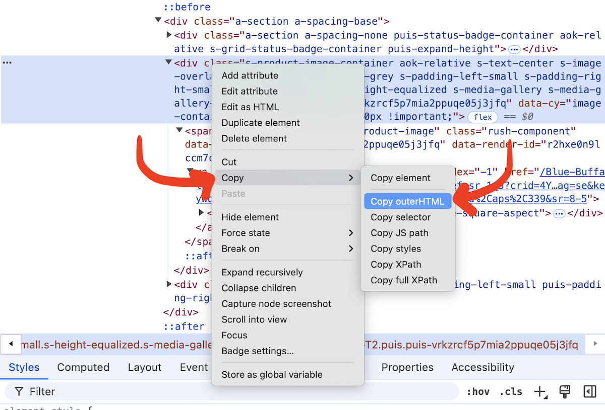

Playwright is a great library for scraping data in Python.
This morning you will create your own notebooks!
02-cleaning-worksheet.ipynb notebook in this folder. Use your data cleaning skills to extract the appropriate data (and don't look at the completed version!)Playwright is installed using pip. It also needs many other tools to make sure our code will work. Please run the code below in a Jupyterlab Desktop notebook cell:
%%python -m pip install lxml html5lib beautifulsoup4 pandas playwright
Then we need to install web browsers for Playwright to use. Use the code below. Notice the note below if you receive an error.
!playwright install
If you get an error with
!playwright install, try to run this code for your install:
bash %pip install lxml html5lib beautifulsoup4 pandas playwrightif that does not work, try
!pip install(!instead of%), and if that does not work trypip install(no%, no!)Then try to run
!playwright installagain
If you use Windows, you also need to few more lines to make Playwright work in Jupyter.
%%python -m pip install --quiet "ipykernel==6.28.0"
get_ipython().kernel.do_shutdown(restart=True)
First, paste this custom prompt into ChatGPT. It will walk you through the process
For the first step, ChatGPT will ask you to run !playwright codegen. This will open a new browser.
Use this browser to visit the page you want to scrape, fill out any forms you need (dropdowns, inputs, buttons), and click a "next" button if necessary.
There is a second window that will write code for you. This will teach ChatGPT how to use the website.
Before you cut and paste the code into ChatGPT, use the dropdown to change the code to Python > Library Async

Next, ChatGPT will ask you to explain the HTML of your "row" of data. Right-click (or command-click) to bring up the menu, then select Inspect (検証 in Japanese Chrome). It might be slightly different if you aren't using Chrome!

Move your mouse around on the code on the right.
Or click the 'select' button and click what you are interested in
Move as high up as possible on the right while still only selecting the area you want.
To get the HTML code for part of the page, first find it using the Web Inspector. Then right click, Copy, Copy outerHTML. You will paste this into ChatGPT to help write your scraper.

For the next step, repeat the process above to get the HTML code for the pagination area. This will teach ChatGPT how to use "next" buttons.
The code that ChatGPT produces is always a little wrong at first. Add this prompt after ChatGPT gives you its code to improve it:
Remember my important notes! - Use async playwright with async/await - Do NOT use asyncio - Flatten the code to not use functions, so the data and df are available in other cells - No main function We are just testing this now. Have it scrape a maximum of 5 pages.
You might be done! If you get an error, paste it into ChatGPT to get new code as an answer. If you get another error, paste that error in.
After two errors, just start from the beginning in a new chat. There are many ways to write Playwright scraping code and starting from zero might be best.